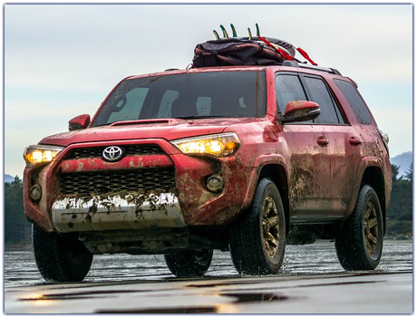

My name is Liz and I am from Wyoming - the best place on Earth!
Here are some fun facts about me:
I LOVE to read.
Skiing is my favorite sport.
I enjoy pretty much any type of live music.
"The mountains are calling, and I must go. -John Muir
I have always wanted a Toyota 4-Runner, its been my dream vehicle since I've been old enough to drive! I love toyotas because they run for-ev-er but I want a 4-runner because they are big enough and powerful enough to take me and my crew plus our gear to where ever the next adventure is.

| Decimal | Hexadecimal |
|---|---|
| 0 | 0 |
| 1 | 1 |
| 2 | 2 |
| 3 | 3 |
| 4 | 4 |
| 5 | 5 |
| 6 | 6 |
| 7 | 7 |
| 8 | 8 |
| 9 | 9 |
| 10 | A |
| 11 | B |
| 12 | C |
| 13 | D |
| 14 | E |
| 15 | F |